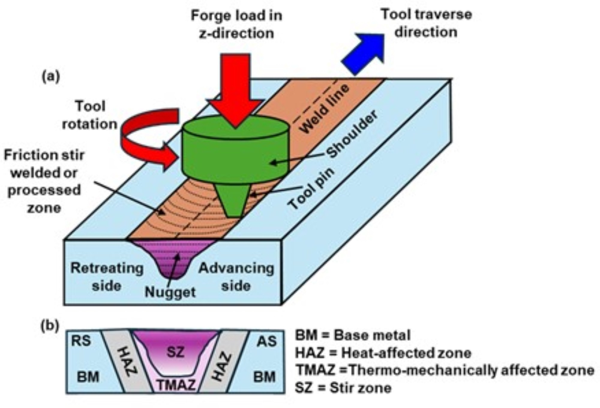
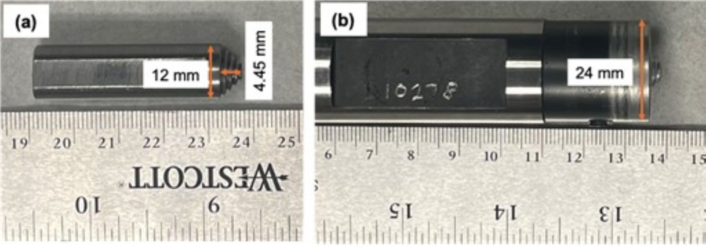
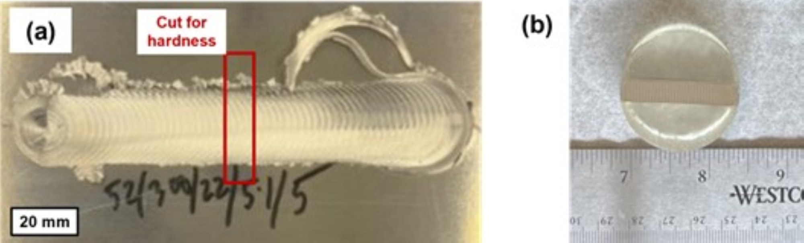
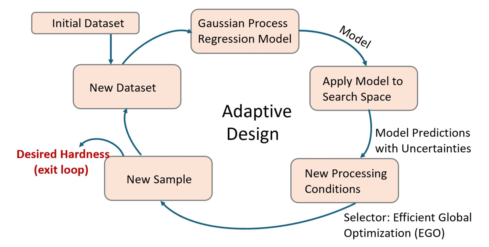
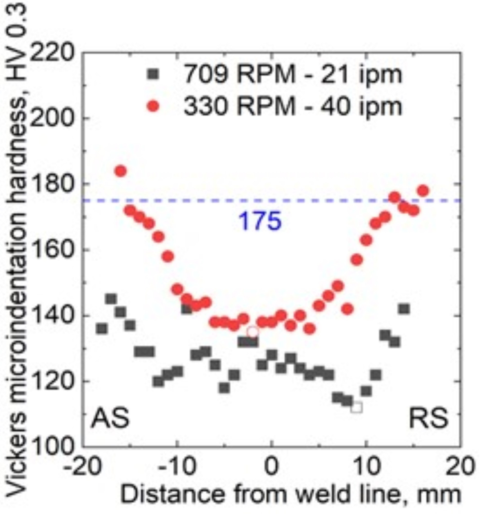
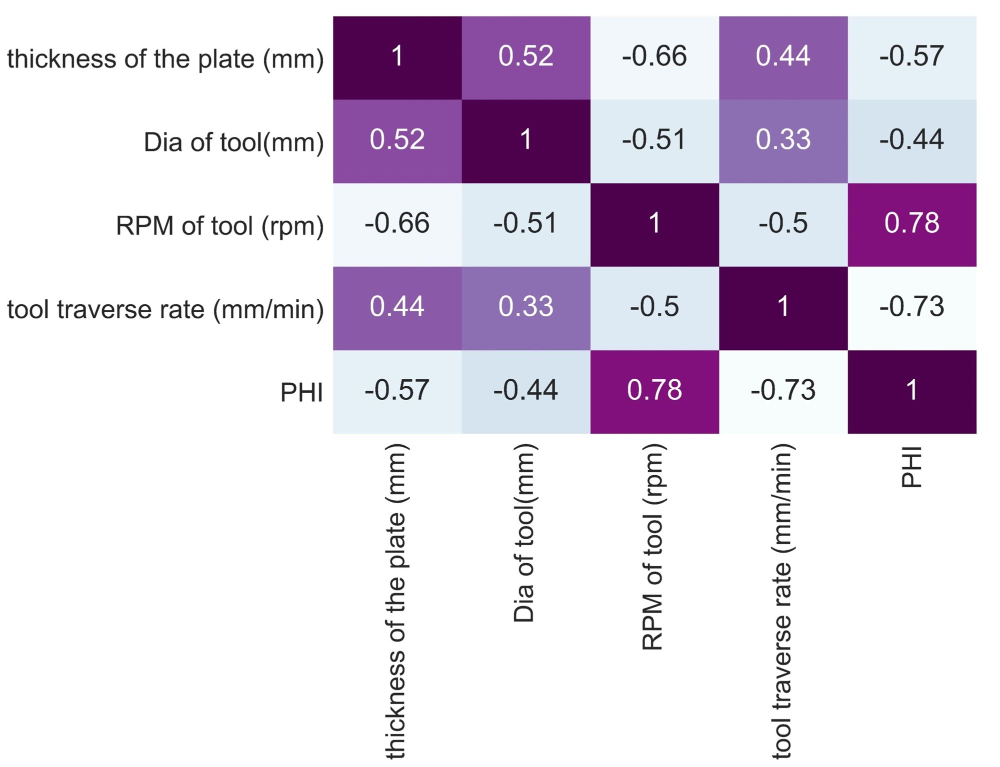
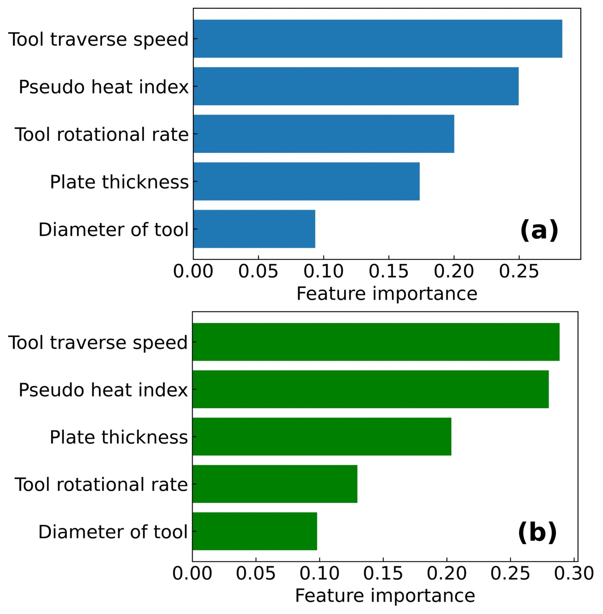
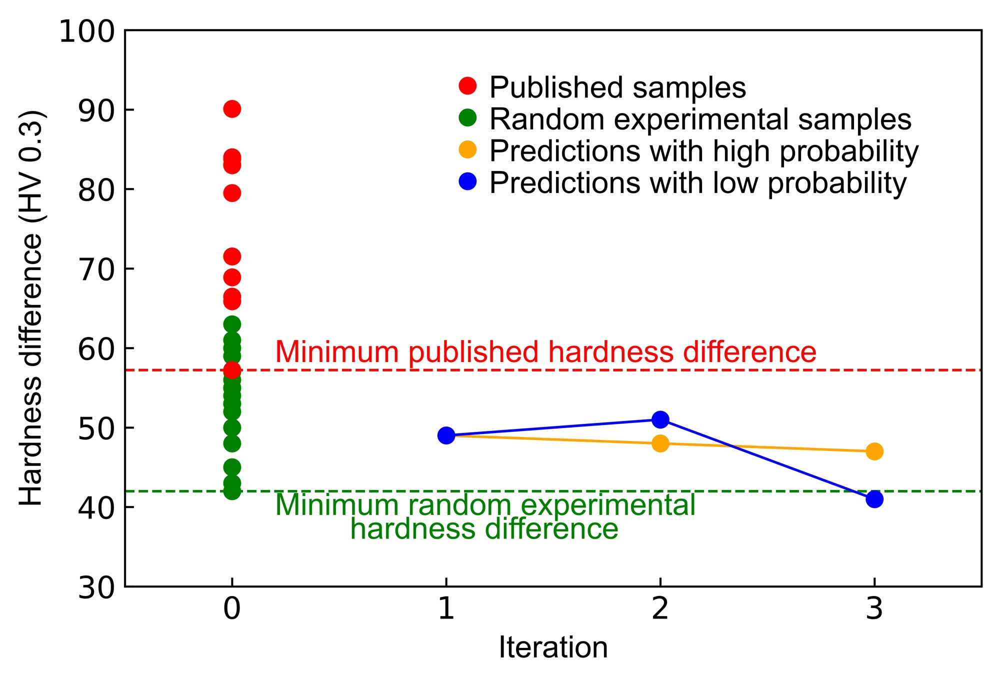
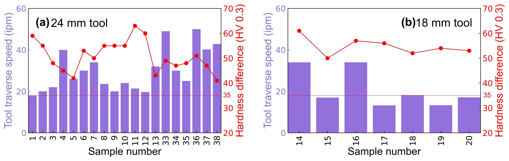
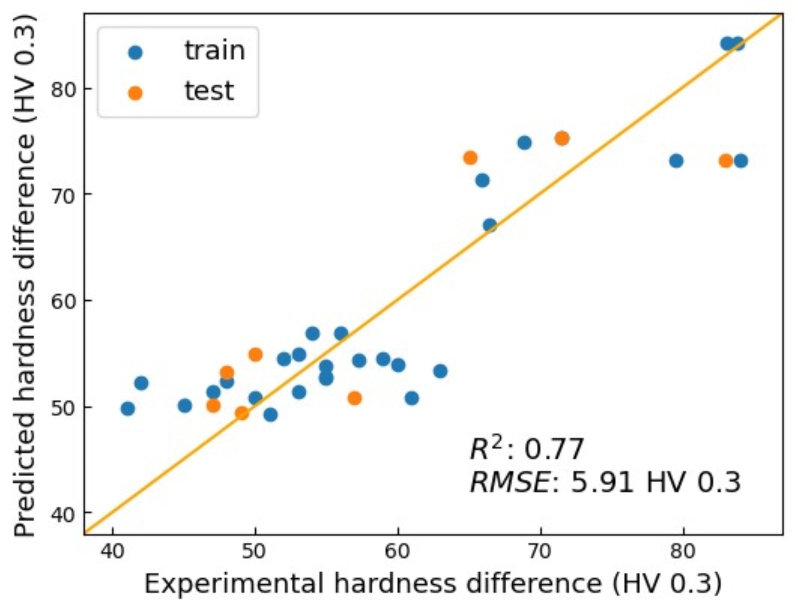

Publication · Materials Today Communications · 2025
A machine learning approach to mitigating hardness degradation in the heat-affected zone of AA7075-T6 alloy
Materials Today Communications 46, 112689 · DOI: 10.1016/j.mtcomm.2025.112689
Abstract
Friction stir welding (FSW) of precipitation-strengthened aluminum alloys presents a significant challenge in mechanical properties due to its notable reduction in strength or hardness within the heat-affected zone (HAZ). A wide range of processing, machine and tools parameters, such as tool-rotationrate, tool traverse speed, and tool geometry (especially shoulder diameter), influence hardness in the HAZ, making it difficult to navigate the vast combinatorial parameter search space for optimum HAZ hardness. In this study, machine learning (ML) techniques were applied to identify the key processing parameters that affect the hardness of AA7075-T6 alloy in the HAZ. Later, an adaptive design strategy was implemented to iteratively determine the optimal combination of processing parameters needed to achieve a target hardness in the HAZ. The objective of the adaptive design strategy was to maximize the improvement in hardness with each experiment until the desired hardness was reached. Additionally, mathematical equations were extracted to predict the hardness reduction at the HAZ with high fidelity using explainable artificial intelligence (XAI). It was demonstrated that ML-guided approach requires generation of a small set of experimental data to attain the desired hardness in the HAZ compared to the case when processing/tool parameters were chosen randomly, thereby directly increasing the efficiency and productivity of the process.
Keywords: Friction Stir Welding (FSW); AA7075-T6 aluminum alloy; optimization; Machine Learning (ML)
Introduction
The Welding Institute (TWI) in the Um developed a solid-state joining method known as Friction Stir Welding (FSW) in 1991, which was initially used for aluminum alloys. In its simplest form, a non-consumable rotating tool is inserted into the adjoining edges of the sheets or plates to be joined and moved along the joint line. The tool serves two main functions - (i) heating of the workpiece and (ii) material flow in the welded region - to form the joint. The heat is generated by the friction between the tool and the workpiece the plastic deformation of the workpiece. This localized heating softens the material surrounding the tool, and the combination of tool rotation and movement causes the material to move from the front of the pin to the back. The entire process of joining takes place below the melting temperature of the materials used and results in a ‘solid state’ joint [1]. Mishra et al. developed Friction Stir Processing (FSP) as a universal tool for modifying microstructures, based on the fundamental principles of FSW. In this scenario, a rotating tool is inserted into a single-piece workpiece to make localized microstructural changes to enhance specific properties [2, 3]. The schematic diagram of FSW is shown in Figure 1. FSW is an alternative solution to fusion welding, which causes common defects like porosity, hot cracking, and reduced strength in welded areas. This is particularly advantageous for high-strength aluminum alloys such as the 7xxx series, which are widely used in aerospace applications due to their low density, high strength and moderate toughness [3, 4]. Aluminum 7075 (AA7075) is one such alloy which is increasingly valued in both aerospace and automotive fields for its lightweight properties and excellent mechanical performance, often comparable to some low-grade steels [5-8]. Al, 5.1-6.1% Mg, 2.1-2.5% Zn, and 1.2-1.6% Cu, along elements like Fe, Si, Mn, Ti, and Cr [9]. AA7075 achieves high strength through the presence of η' precipitateswhich restrict dislocation movement [10-12].

Microstructural analysis reveals three distinct regions following a typical FSW: the stirred zone (SZ), thermo-mechanically affected zone (TMAZ), and heat-affected zone (HAZ), each impacting weld properties differently. In the SZ, intense friction and plastic deformation result in a fine-grained, recrystallized structure, alongside precipitate dissolution and coarsening [13, 14], generally resulting in reduced hardness relative to the base metal for precipitation-strengthening alloys. The TMAZ is a highly deformed zone exposed to significant heat but not enough for complete recrystallization and some precipitate dissolution or reprecipitation in precipitation strengthened systems [15]. The HAZ, however, experiences only thermal exposure, and therefore retains the grain structure of the parent material. For precipitation-strengthened alloys such as AA7075, the η' precipitates in the HAZ coarsen due to thermal exposure during FSW, which can reduce hardness and tensile strength in this zone [1], making the HAZ the softest region. Post-weld heat treatments can increase hardness in the SZ and TMAZ through the nucleation of fine precipitates, although hardness recovery in the HAZ is more challenging due to overaging effects [16]. Optimizing FSW/P parameters like tool rotation speed and traverse speed can limit softening in the HAZ by controlling heat input and thus reducing precipitate overaging.
Based on domain knowledge and published results, the hardness in the HAZ is influenced by significantly large number of welding parameters related to the tool (shoulder diameter, pin diameter, pin length, tool geometry, and tool materials etc.), the machine (ex. backing plate, tool traverse speed, tool rotation rate, and tool tilt angle etc.), and the workpiece ( width, length, thickness, and chemistry etc.), just to name a few. These processing parameters impact the thermal profile experienced by the joint during FSW. For example, higher tool rotation rates, when other welding parameters remain the same, can lead to higher peak temperatures in the joints, resulting in larger average grain sizes and consequently lower hardness at the joint [17]. Other parameters can be varied to optimize hardness or strength in the HAZ. However, determining the optimal combination of processing parameters to improve the hardness in the HAZ experimentally is a complex, time-consuming, and expensive process due to the vast number of possible parameter combinations.
To accelerate the search for the optimal parameter combinations for a desired hardness condition in the HAZ, this work employs machine learning approach. Machine learning is a rapidly growing field that uses mathematical models and algorithms to make decisions with high fidelity. ML has been applied across various engineering and scientific disciplines over the past few decades [18-20]. ML tools can greatly accelerate the determination of the necessary processing parameters, a process that was previously not possible without them. By effectively revealing hidden relationships between processing parameters and properties, these tools can drastically reduce the time required to identify the optimal set of parameters for desired properties, which is vital for enhancing hardness at the joint in the study of FSW.
ML has already been applied in FSW as reported in previously reported literatures [21-23]. One approach involved using a convolutional neural network with data from cameras that capture top and side views of the welded region to detect defects during FSW [21]. In addition to the experiments, ML was also integrated with finite element methods (FEM), a modeling technique, to tailor FEM to real-world FSW conditions by predicting the adjustable parameters [22]. However, previous attempts to predict joint strength using ML models were not very successful due to insufficient data for training and testing the models [23]. In this study, an informatics-based adaptive design strategy (an ML algorithm) was employed to iteratively guide subsequent experiments in the search for optimal parameter combinations to obtain target HAZ hardness in AA7075-T6 plates during FSW/P. The objective was to maximize the lowest hardness in the welded region, thereby minimizing hardness variation across the region enhancing the stability of welded samples. The novelty of this approach is that it requires generating only a subset of data to achieve target hardness in the welded region. Similar adaptive design strategy was previously adopted to predict the exact composition of a very complex multi-component (Ti50.0Ni46.7Cu0.8Fe2.3Pd0.2) shape memory alloy with a targeted thermal hysteresis property [24]. To arrive at the alloy composition, it was reported that only 36 machine learning predicted compositions were synthesized from a potential list of ~800,000.
To reduce experimental time and cost, a dataset combining hardness and processing parameter /feature data obtained from both previously reported literature and our experiments were compiled for further ML analysis. Using ML, feature importance analysis was conducted to assess the significance of each parameter in controlling the hardness difference in the HAZ. In this context hardness difference is the difference in minimum hardness in the HAZ and base metal (BM). Additionally, an adaptive design approach was used to predict the optimal parameter combinations for a targeted hardness difference in the HAZ, and the predictions were later experimentally validated. Finally, an equation linking between processing parameters and hardness difference in the HAZ was derived using explainable artificial intelligence approach.
Methodology
Material and experiments
Aluminum 7075 plate
Rolled Aluminum 7075 plates with a thickness of 6.35 mm were procured from McMaster-Carr, in peak-aged T651 condition. A section of the plate measuring 12 inches in length and width was then cut into 6-in. (L) x 4-in. (W) pieces by wire-EDM. These smaller sections were subsequently used for bead-on-plate type FSW.
Friction stir welding FSW)
FSW was conducted using an RM7 series machine from Bond Technologies. Processing parameters utilized in our experiments include a range of tool rotational rates (200–1400 rpm, rpm referring to rotation per minute) and traverse speeds (20–60 ipm, ipm referring to inches per minute). The tool was rotated counterclockwise, and the total length of processing was 100 mm. During FSW, a tilt angle of -1.5°, a plunge speed of 5 mm/min, and plunge depths between 4.3–5.1 mm were maintained. Adjustments in plunge depth helped achieve defect-free processing across different tool rotational rates and traverse speeds. Figure 2 illustrates the pin and tool geometry for FSW, with specific details provided in Table 1.

| Pin diameter | ||||||
|---|---|---|---|---|---|---|
| Tool material | Pin height (mm) | Near the tip of the tool, mm | Near the root of the pin, mm | Shoulder diameter, mm | Pin profile | Shoulder profile |
| H13 tool steel (hardened) | 4.45 | 3.72 | 8.97 | 24 | Truncated conical with threads | Scrolled |
| H13 tool steel (hardened) | 5.01 | 4.10 | 5.95 | 18 | Threaded pin with flutes | Feature less |
Vickers microindentation hardness
A cross-section was obtained by cutting the processed region with wire-EDM along transverse direction at approximately the midpoint (see Figure 3(a)), resulting in a sample measuring 1.45 inches in length (along the transverse direction) and 0.2 inches in width (along the thickness direction). A picture of the sample mounted in the acrylic mount is shown in Figure 3(b). The sample was mounted using a cold-mounting mixture of acrylic powder and hardener. Mechanical polishing was then performed, with silicon carbide (SiC) papers from 600 to 800 grit and followed by a diamond polishing solution ranging from 3 μm to 1 μm. The final polishing stage involved a 0.05 μm alumina polish for about three minutes. Vickers microindentation hardness was performed using a CLEMEX automatic microindentation hardness tester using a load of 300 g with a dwell time of 10 s. During hardness testing, measurements were recorded at approximately 33 points along the length and 12 points across the width. A hardness profile (provided in a subsequent section) along the middle of the plunge depth was used to determine the minimum hardness, with the base metal hardness set at 175 HV 0.3 as a reference point [25].

Machine learning approach
Data collection
In this study, the dataset used for ML models include samples from both our experiments and a literature survey. For analyzing feature importance and initializing the adaptive design, 20 samples were collected from our random experiments (in which processing parameters were chosen without guidance from ML), using the materials and methods discussed in Section 2.1 (see Table 2). Additionally, 12 samples were obtained from literature, after validating the compatibility of each with the dataset to enhance and to reduce the experimental cost of data collection (see Table 2).
| Sample number | Plate thickness, mm | Shoulder diameter, mm | Tool rotational rate, rpm | Tool Traverse speed, ipm | Minimum hardness, HV 0.3 | Hardness difference with BM, HV 0.3 |
|---|---|---|---|---|---|---|
| 1* | 6.35 | 24.00 | 300.00 | 18.00 | 116.00 | 59.00 |
| 2* | 6.35 | 24.00 | 300.00 | 20.00 | 120.00 | 55.00 |
| 3* | 6.35 | 24.00 | 300.00 | 22.00 | 127.00 | 48.00 |
| 4* | 6.35 | 24.00 | 330.00 | 40.00 | 130.00 | 45.00 |
| 5* | 6.35 | 24.00 | 400.00 | 26.00 | 133.00 | 42.00 |
| 6* | 6.35 | 24.00 | 400.00 | 30.00 | 122.00 | 53.00 |
| 7* | 6.35 | 24.00 | 400.00 | 34.00 | 125.00 | 50.00 |
| 8* | 6.35 | 24.00 | 406.00 | 23.60 | 120.00 | 55.00 |
| 9* | 6.35 | 24.00 | 500.00 | 20.00 | 120.00 | 55.00 |
| 10* | 6.35 | 24.00 | 500.00 | 24.00 | 120.00 | 55.00 |
| 11* | 6.35 | 24.00 | 709.00 | 21.39 | 112.00 | 63.00 |
| 12* | 12.50 | 24.00 | 801.00 | 19.65 | 115.00 | 60.00 |
| 13* | 12.50 | 24.00 | 1323.00 | 32.00 | 132.00 | 43.00 |
| 14* | 12.50 | 18.00 | 300.00 | 34.00 | 114.00 | 61.00 |
| 15* | 12.50 | 18.00 | 699.00 | 17.00 | 125.00 | 50.00 |
| 16* | 12.50 | 18.00 | 700.00 | 34.00 | 118.00 | 57.00 |
| 17* | 12.50 | 18.00 | 796.00 | 13.25 | 119.00 | 56.00 |
| 18* | 12.50 | 18.00 | 849.00 | 18.20 | 123.00 | 52.00 |
| 19* | 12.50 | 18.00 | 897.00 | 13.32 | 121.00 | 54.00 |
| 20* | 12.50 | 18.00 | 928.00 | 17.10 | 122.00 | 53.00 |
| 21[26] | 12.50 | 31.21 | 300.00 | 5.91 | 91.92 | 83.08 |
| 22[26] | 12.50 | 31.21 | 300.00 | 5.91 | 91.20 | 83.80 |
| 23[27] | 6.35 | 18.00 | 600.00 | 3.00 | 84.91 | 90.09 |
| 24[28] | 5.00 | 15.00 | 1000.00 | 13.78 | 117.77 | 57.23 |
| 25[29] | 5.00 | 6.55 | 1000.00 | 1.18 | 103.48 | 71.52 |
| 26[30] | 5.00 | 20.00 | 1000.00 | 1.57 | 95.50 | 79.50 |
| 27[30] | 5.00 | 20.00 | 1000.00 | 3.15 | 108.54 | 66.46 |
| 28[30] | 5.00 | 20.00 | 1200.00 | 1.57 | 91.00 | 84.00 |
| 29[31] | 5.00 | 18.00 | 1250.00 | 1.24 | 106.10 | 68.90 |
| 30[30] | 5.00 | 20.00 | 1300.00 | 1.57 | 92.00 | 83.00 |
| 31[29] | 5.00 | 6.55 | 1500.00 | 1.18 | 103.48 | 71.52 |
| 32[29] | 5.00 | 6.55 | 1500.00 | 1.97 | 109.11 | 65.89 |
Each sample includes five processing parameters: plate thickness (mm), tool traverse speed (ipm), tool rotational rate (rpm), tool diameter (mm), and pseudo heat index (PHI, rpm²/ipm). All the processing parameters were determined based on domain knowledge and experimental empirical data. Among these parameters, plate thickness refers to the thickness of the sample being welded, tool traverse rate indicates the speed at which the welding tool moves along the joint line, tool rotational rate describes the rate of the tool's rotations, and tool diameter is recorded by measuring the size of the tool's shoulder. In contrast to these parameters, pseudo heat index (PHI) is a function of two independent parameters:
where w is the tool rotational rate of the tool; and v denotes the tool traverse speed. PHI can be considered as a simple heat input metric to predict the heat generated during FSW [32]. Instead of the hardness at the HAZ, in this work we used the hardness difference as the target for ML predictions.
Data preprocessing
In this work, the dataset collected in Table 2 includes multiple processing parameters with different units and ranges, which could interfere with the ML model's ability to accurately learn the relationship between processing parameters and targeted hardness. To mitigate this, data scaling was applied to reduce the bias introduced by variations in units and ranges during model training. In this study, the data was scaled using the standardization method, expressed as [33]:
where xnew represents the data after scaling; x denotes defined as original data, μ is mean value within the feature, and σ is defined as standard deviation within the feature.
Kendall rank correlation
Too many features can complicate the trained ML model and make it computationally expensive. To address this potential issue, Kendall rank correlation analysis was used to evaluate the correlation between each pair of features, possibly helping to reduce the dimensionality of the input feature space. The formula for calculating the Kendall correlation coefficient (τ) is:
where nC is the number of concordant pairs, nD is defined as the number of discordant pairs, and n denotes the total number of pairs [34]. The Kendall correlation coefficient (τ) is a metric that ranges from -1 to 1. τ values of 1 and -1, indicating a strong positive and negative relationship, respectively, Additionally, a Kendall correlation of 0 represents no relationship. When the coefficient between two features is very strong, either positively or negatively, it suggests that the two features are highly correlated. In such cases, one of the features may be removed, as they contribute similarly during training of the ML model. Therefore, Kendall rank correlation analysis helps enhance model performance by minimizing both redundancy and training costs.
Random Forest
Random Forest (RF) [35-37] was used to analyze the relative importance of features in influencing hardness difference in the HAZ. RF is a more suitable choice for exploring nonlinear relationships between features, compared to other common feature importance analysis methods [38-40]. RF can estimate feature importance numerically while simultaneously reducing the risk of overfitting.
Random Forest (RF) consists of multiple decision trees, where a decision tree is a non-parametric supervised learning model that represents decisions and all their possible outcomes. RF builds tree-like structures by recursively splitting the data based on decisions made at nodes, which is aimed at elevating the model's predictive accuracy. In this work, Mean Squared Error (MSE) was used to determine the best attribute for splitting the data at nodes in each decision tree [35-37]. MSE is defined as:
where n is defined as the total number of observations, yi represents the ith predicted target, and yi represents the ith true target. The hyperparameters for this model were tuned using the grid search method, with the following settings: 500 decision trees, a maximum tree depth of 10, 1 feature used to split the data at each root or decision node, a minimum of 5 samples required at each leaf node, and at least 2 samples needed to split a root or decision node. Details of the RF-model is presented elsewhere [41].
Extra Trees
Alongside Random Forest, Extra Trees, another machine learning technique that aggregates multiple decision trees, was employed for feature importance analysis to validate the results from the RF model. While Extra Trees is similarly structured to Random Forest, there are two key differences. First, Random Forest subsamples the input data, whereas Extra Trees uses the full range of the original data. Second, Random Forest selects the best split at each node, while Extra Trees randomly chooses the cut points [42, 43].
In the Extra Trees model, the features for each split and the cut points are both randomly determined. This randomness in both feature selection and split points results in faster working rate and less sensitivity to noisy features compared to Random Forest models [42]. The optimized hyperparameters for this model were determined via grid search, with the following values: 1500 decision trees, a maximum tree depth of 10, 4 features selected to split the data at each root or decision node, a minimum of 2 samples required at each leaf node, and at least 2 samples needed to split a root or decision node.
Adaptive design
Adaptive design, an ensemble ML algorithm, was employed to guide subsequent experiments toward achieving the desired hardness difference in the HAZ [24, 44, 45]. The operating principle of adaptive design is illustrated in Figure 4. Our initial dataset of 32 samples was used as the first step toward training Gaussian regression models. Once trained, these models are used to explore the parameter combination search space and generate predictions along with associated uncertainties. Next, the predictions and uncertainties are input into the selector Efficient Global Optimization (EGO), which identifies new parameter combinations to be used in subsequent experiments. If the experiments confirm that the selected parameters achieve the intended hardness difference, the design process concludes. If not, the new experimental data is added to the current dataset, and the algorithm continues until the hardness difference target is met.

The adaptive design incorporates two key machine learning techniques: the Gaussian Process regressor (GPR) and Efficient Global Optimization (EGO). In the Gaussian Process regressor, it is assumed that:
where f(x) represents the function to be estimated, and N(0,σ2) denotes a normal distribution with a mean value of 0 as well as a standard deviation of σ to describe the error. Unlike other common regressors, f(x) is defined as a set of functions that follow a Gaussian distribution in an infinite-dimensional space. In this study, the mean function is set to be 0, and the covariance is described as a square exponential function:
where θ and σn are free parameters generated by maximum likelihood and cross-validation [45].
Efficient Global Optimization (EGO), the selector, determines the next processing combinations using the Expected Improvement (EI) function E(x) [46]:
where μ* denotes the value of the best-measured material, μ(x) and σ(x) are the mean and standard deviation of the candidate, separately, and both Φ and ϕ represent the cumulative and probability density functions of 𝒩(0, 1), respectively. Thus, the next potential parameter combination selected (defined as xnext) is:
In adaptive design, two extreme scenarios can arise. If all candidates have a standard deviation of 0 (indicating low uncertainty), the candidate with the best hardness difference target will be selected (exploitation). On the other hand, if candidates exhibit high standard deviation with high uncertainty, they will be introduced into the subsequent experiments (exploration). In an intermediate case, a balance is maintained between exploration and exploitation to effectively direct future experiments.
Explainable artificial intelligence (XAI)
To broaden our investigation of processing parameters during FSW, explainable artificial intelligence (XAI) tool such as symbolic regression (SR) was applied to our hardness vs processing parameters dataset to extract equations to predict the hardness difference as a function of one or more of the 5 input features. SR is useful for obtaining a simple, interpretable equation for reduction in hardness compared to the base metal, which can provide useful physical insight into the joining process. This tool is based on a genetic programming algorithm, which begins by initializing a population with different mathematical expressions made of a defined number of potential operations and features. Multiple populations can be initialized to increase the likelihood of extracting the most accurate equations. Possible equations in the population are then evaluated with the training data using a common loss function such as MSE (Eq. (4)), and the best-performing equations are kept while the rest are removed. Next, mutations are applied by randomly combining parts of two separate equations and randomly altering different components, until equations that most accurately represent the training data are found [47].
Evaluation metrics
Two metrics were used in this work to assess the ML model performance: coefficient of determination (R2) and root mean square error (RMSE). R2 measures how well the test data fits the trained model, and RMSE presents the differences between the observed and predicted targets. The mathematical expression for each metric is provided below [48, 49]:
where n is the total number of samples, yi denotes the mean value of the hardness difference target; yi is defined as the predicted hardness difference target, and yi represents the experimental hardness difference target. All the machine learning algorithms were implemented using the Scikit-learn package in this study.
Results
Hardness profile
Figure 5 illustrates typical hardness profiles taken at the center of the plunge depth for samples processed by FSW. Two data sets, with tool rotational rates of 709 and 330 rpm and traverse speeds of 21 and 40 ipm, respectively, are shown as representative profiles. It is notable that the minimum hardness for the 709 rpm sample is significantly lower than that of the 330 rpm sample. Additionally, the minimum hardness occurs at about 10 mm away from the weld centerline, likely in the heat-affected zone (HAZ), which spans approximately 5 mm for the 709 rpm sample. In contrast, the 330 rpm sample shows a narrower HAZ of around 2 mm, without the substantial decrease in hardness observed in the 709 rpm sample. As a result, minimum hardness was observed near the weld centerline for the 330 rpm sample. All samples generated from experiments without and with ML guided selection of processing parameters are summarized in Table 2 and Table 3, respectively.

Feature importance analysis
To simplify the feature space while preserving model performance, Kendall correlation coefficient analysis based on the initial dataset of 32 samples was performed to explore possible correlations between each feature pair. The results are presented as a heatmap in Figure 6. All the five features are listed along both the axes. The heatmap is divided into regions, with different colors representing the magnitude of the τ value within each region.

In Figure 6, all the correlations along the diagonal (from the top left to the bottom right) have a strength of 1, which is the positive limit of τ, exhibiting a perfect correlation between the features. This is because each feature pair along this diagonal consists of two identical features. No strong correlation τ ≅ -1 or 1 were observed among the off-diagonal pairs. In the other regions, where each pair consists of two different features, a τ ≅ 0 is not observed implying a correlation exists between each pair of the five processing parameters or features. It is crucial to note that the samples in the initial dataset were collected from both a literature survey and our experiments in which processing parameters were chosen randomly i.e. without any guidance from machine learning. We believe that the weaker correlations related to thickness of the plate, diameter of the tool, tool rotational rate, and tool traverse speed reflect the sample distribution in the feature space instead of the physical mechanism behind the FSW.
Unlike the four processing parameters discussed earlier, the pseudo heat index (PHI) is used to predict the heat generated during FSW as a function of the tool's rotational rate (w) and tool traverse speed (v), represented by the equation (PHI=w2v). According to this function, PHI is directly proportional to the tool rotational rate and inversely proportional to the tool traverse speed. This relationship aligns with the correlations shown in Figure 6: τ=0.78 between PHI and tool rotational rate, and τ =-0.73 between PHI and tool traverse speed. Therefore, this Kendall correlation analysis has effectively revealed the underlying physics of FSW.
Since this correlation analysis does not identify any feature pair with a very strong correlation (τ > 0.9 or < -0.9) [50], it suggests that all the analyzed features make unique contributions to determining the hardness difference in the HAZ. As a result, no feature was eliminated, and the five processing parameters were retained for subsequent ML investigations.
The relative importance of the five processing parameters toward hardness difference, as generated by the Random Forest and Extra Trees models, is presented in Figures 7(a) and 7(b), respectively. The feature importance values are displayed numerically along the horizontal axis, while the vertical axis ranks the importance of the processing parameters to determine the hardness difference in the HAZ.

Results obtained from Random Forest model (Figure 7(a)) show that all the processing parameters show significant contributions to the hardness difference. Among these parameters, tool traverse speed plays a particularly important role in determining the hardness difference, a finding that is supported by previously published experimental work [51]. The impact of tool traverse rate on the microstructure and mechanical performance of 7020 aluminum alloy processed by FSW was investigated by varying the tool traverse speeds. It was demonstrated that as the tool traverse speed increased from 50 mm/min to 200 mm/min, with a constant rotational rate of 900 rpm, the difference between the HAZ and the base material decreased. Lower tool traverse speeds resulted in lower hardness in the joints, which was attributed to the larger grain size in the stir zone (SZ) due to higher heat input. The hardness of a joint is primarily impacted by the grain size, as smaller grains increase hardness by providing more grain boundaries which act as barriers to dislocation movement.
Similar to the Random Forest model, in Extra Trees model the tool traverse speed (Figure 7(b)) also emerges as the most important feature among all the features. Furthermore, the ranking of the features in Figures 7(a) and 7(b) shows a similar pattern, with the exception of the tool rotational speed and thickness of the plate. It is believed that the difference in ranking between the models originates from the distinct algorithms utilized by the two machine learning techniques. In the Extra Trees model, the entire dataset is used for each decision tree, whereas in Random Forest, the input data is subsampled via bootstrap sampling. Additionally, Random Forest selects the best node to split, while Extra Trees randomly chooses the split points. As a result, Extra Trees may perform less effectively than Random Forest when dealing with noise in the dataset. Given the fact that 12 samples were collected from literature, which can be susceptible to bias as different researchers might unintentionally prioritize studies that support their own viewpoints. Hence, the Random Forest model is considered more suitable for feature importance analysis. However, the Extra Trees model can still support and validate some of the results obtained from the Random Forest model.
Optimization of processing parameters for targeted hardness difference
Adaptive design strategy was applied to improve the search efficiency for the optimal parameter combination, aiming to reduce the hardness difference in the HAZ and the mechanical performance of the joint. The initial dataset used in this design was the same as that used in the feature importance analysis above. Among the 32 samples (presented in Table 2), the hardness difference in the HAZ ranged from 42 to 90.09 HV 0.3. As shown in Figure 8, all the 32 samples within the initial dataset are distributed along the x-axis in iteration zero, with the y-axis representing the hardness difference in the HAZ. Among these samples, the minimum hardness difference from our random experiment (shown in red dots) was 42 HV 0.3, while the literature-derived samples (shown in green dots) had a minimum hardness difference value of 57.23 HV 0.3. Given that the minimum hardness difference observed within the initial dataset was 42 HV 0.3, our aim in adaptive design strategy is to search for processing conditions needed to attain a hardness difference of 35 HV 0.3.

In each iteration, the adaptive design iteration eight parameter combinations were predicted, with the corresponding probability of achieving the target hardiness difference determined by the R² score from the Gaussian Process models. Given that the initial dataset only contained 32 samples, there is considerable uncertainty in the initial predictions, even for those with high probability. As a result, one combination with a high probability and one with a low probability were selected for further experimentation.
Using the initial dataset, in the first iteration ML predicts the set of processing conditions needed to attain targeted hardness difference (see Supp. Table 1 in Supplemental Information). Later, two of the ML-predicted processing conditions (one with high and one with low probability) were used in our experiments. In the first iteration, the experimental results (49 HV 0.3 for both predictions) were higher than the lowest hardness difference value in the initial dataset (42 HV 0.3), as presented in Figure 8. Consequently, the two new samples were added to the initial dataset in the next iteration. This process was repeated in the second iteration (see Supp. Table 2 in Supplemental Information), with two additional new samples (48 HV 0.3 and 51 HV 0.3) incorporated into the dataset for the third iteration. Within the third iteration (see Supp. Table 3 in Supplemental Information), an experimental sample with hardness difference of 41 HV 0.3 was verified, surpassing the previous minimum hardness difference (42 HV 0.3). Finally, the design process was terminated, having reached the optimal parameter combination that minimized the hardness difference in the HAZ. The predicted processing conditions for each of the three iterations with corresponding probability and experimental results in each iteration are listed in Table 3.
Analyzing the three iterations in Figure 8, hardness difference of samples experimentally collected based on high-probability predictions continued to decrease, while samples generated by low-probability predictions show no clear trend. The small sample size result in considerable uncertainty during the adaptive design process, which reduces the reliability of the predictions. Consequently, predictions with high probabilities do not necessarily outperform those with low probabilities. In this adaptive design, only six new samples were experimentally tested to achieve the optimal parameter combination. Compared to the initial dataset size of 32 samples, the adaptive design significantly advanced the process of designing parameters for improving the mechanical performance of FSW. Thus, this approach both greatly enhanced design efficiency and reduced experimental costs.
| Iteration number | Sample number | Plate thickness, mm | Shoulder diameter, mm | Tool rotational rate, rpm | Tool traverse speed, ipm | Minimum hardness, HV 0.3 | Hardness difference with BM, HV 0.3 | Probability | |
|---|---|---|---|---|---|---|---|---|---|
| 1 | 33 | 6.35 | 24.00 | 380.00 | 49.00 | 126.00 | 49.00 | 0.91 | |
| 1 | 34 | 6.35 | 24.00 | 200.00 | 30.00 | 126.00 | 47.00 | 0.64 | |
| 2 | 35 | 6.35 | 24.00 | 292.00 | 25.00 | 127.00 | 48.00 | 0.93 | |
| 2 | 36 | 6.35 | 24.00 | 333.00 | 50.00 | 124.00 | 51.00 | 0.77 | |
| 3 | 37 | 6.35 | 24.00 | 394.00 | 40.20 | 128.00 | 47.00 | 0.92 | |
| 3 | 38 | 6.35 | 24.00 | 201.00 | 42.83 | 134.00 | 41.00 | 0.76 | |
Feature importance analysis based on overall experiments
In Section 3.2, the relative effect of each processing parameters on hardness difference in the HAZ was probed using ML techniques, based on previously published and random experimental samples. After adaptive design, all the experimental samples, from both random experiments and adaptive design, were summarized and analyzed for further feature importance analysis. The tool traverse speed, the most important feature obtained from previous feature importance analysis (Section 3.2), and the corresponding hardness difference of all the experimental runs in this study are illustrated in Figure 9(a) and (b). For the 24 mm tool (Figure 9(a)), at tool traverse speeds of 26.00 (sample 5), 32 (sample 13), and 42.83 (sample 38) ipm, respectively, the minimum hardness values approached the target (of under 45 HV 0.3). For the 18 mm tool (Figure 9(b)), the minimum hardness difference, 50 HV 0.3 (sample 15), was approximately 40% higher than the intended target. This finding agrees with observation from Figure 7: although the diameter of the tool is less significant than the other four processing parameters in determining hardness differences, it still makes a notable contribution to hardness conditions in the HAZ.

Equation extraction for predicting hardness difference
Symbolic regression was used to describe the hardness difference in the heat-affected zone as a function of the welding parameters. The published article reports two interpretable equations:
Here, t is plate thickness, v is tool traverse speed, p is the pseudo heat index, d is tool shoulder diameter, and ω is tool rotational rate. The published test results for Equation 11 are an RMSE of 3.96 HV 0.3 and an R² of 0.90.

A simpler relation uses plate thickness and traverse speed:
The published article reports a test RMSE of 5.91 HV 0.3 and R² of 0.77 for Equation 12.
Conclusions
In this study, the relationship between processing parameters and the HAZ hardness during FSW was examined using machine learning techniques. Five processing parameters were analyzed: thickness of the plate, tool traverse speed, tool rotational rate, tool diameter, and pseudo heat index. To better understand the data distribution and simplify the input feature space, Kendall correlation coefficient analysis was conducted to investigate the correlations between these features. It indicates that each of the analyzed features makes a distinct contribution to the hardness difference in the HAZ. Furthermore, Random Forest and Extra Trees models were trained to evaluate the combined effects of these processing parameters on the hardness difference. Both the Random Forest and Extra Trees models confirmed that the tool traverse speed is the most influential factor affecting the hardness difference, among all the analyzed processing parameters. Later, adaptive design approach was employed to efficiently search for the optimal processing parameter combination for a desired hardness difference in the HAZ. After three iterations and only six experimentally verified samples, a hardness difference of 41 HV 0.3 was achieved when the processing conditions were chosen based on machine learning predictions. This is in contrast to previous random experiments in which it required 32 samples to attain a hardness difference of 42 HV 0.3. These findings directly demonstrate the power of adaptive design in accelerating the search for optimal parameter settings. Finally, a mathematical equation was derived using XAI, which quantitatively describes the relationship between the processing parameters and hardness difference with high fidelity.
Our ML-based approach offers new insights: by leveraging only a subset of all conducted experiments, the issue of knockdown in hardness in HAZ during FSW can be effectively addressed with ML models. This is especially valuable given the high costs and time-consuming nature of conducting extensive experiments in the study of FSW. Generally, this approach not only provides more accurate predictions but also improves the efficiency and economic feasibility of the research as well as enhancing the scientific community’s understanding of the welding process. However, the results presented has a few limitations.
Firstly, FSW is a highly complex welding process influenced by more than 20 parameters, but due to limitations in the available literature data only five key processing parameters based on domain knowledge. In the future, additional literature data will be surveyed to include more processing parameters, thus further strengthening the predictions from ML models.
Secondly, the initial datasets used in this study only included 32 samples. The small sample size increases the uncertainty of predictions in the adaptive design process and can lead to less reliable prediction performance in the work’s extracted equations. To address this issue, more samples need to be collected from both literature and experiments in the future, which may improve the reliability and robustness of ML models.
Lastly, data clustering problems were observed in the datasets, which prevented the Kendall correlation coefficient analysis from fully capturing the underlying physics of the FSW process. In the future, special attention will be paid to the distribution of samples when designing experiments to minimize clustering and ensure a more representative dataset. By removing these limitations, subsequent research can be further improved with more accurate ML predictions and a deeper understanding of the physics behind the FSW process.
Acknowledgement: Dr. Samrat Choudhury was financially supported by the National Science Foundation Award number: 2150816.
References
- Mishra, R.S. and Z. Ma, Friction stir welding and processing. Materials science and engineering: R: reports, 2005. 50(1-2): p. 1-78.
- Mishra, R.S., et al., High strain rate superplasticity in a friction stir processed 7075 Al alloy. Scripta materialia, 1999. 42(2): p. 163-168.
- Mishra, R.S. and M.W. Mahoney. Friction stir processing: a new grain refinement technique to achieve high strain rate superplasticity in commercial alloys. in Materials Science Forum. 2001. Trans Tech Publ.
- Song, Y., et al., Defect features and mechanical properties of friction stir lap welded dissimilar AA2024–AA7075 aluminum alloy sheets. Materials & Design, 2014. 55: p. 9-18.
- Hayat, F., Electron beam welding of 7075 aluminum alloy: microstructure and fracture properties. Engineering Science and Technology, an International Journal, 2022. 34: p. 101093.
- Zhang, G., C. Xiao, and O.O. Ojo, Dissimilar friction stir spot welding of AA2024-T3/AA7075-T6 aluminum alloys under different welding parameters and media. Defence Technology, 2021. 17(2): p. 531-544.
- MirHashemi, S., A. Amadeh, and F. Khodabakhshi, Effects of SiC nanoparticles on the dissimilar friction stir weldability of low-density polyethylene (LDPE) and AA7075 aluminum alloy. Journal of Materials Research and Technology, 2021. 13: p. 449-462.
- Mehri, A., et al., The effects of friction stir welding on microstructure and formability of 7075-T6 sheet. Results in Engineering, 2023. 18: p. 101041.
- Zheng, J.K., et al., Degradation of precipitation hardening in 7075 alloy subject to thermal exposure: A Cs-corrected STEM study. Journal of Alloys and Compounds, 2018. 741: p. 656-660.
- Wert, J.A., Identification of precipitates in 7075 Al after high-temperature aging. Scripta Metallurgica, 1981. 15(4): p. 445-447.
- Darsono, F. and S. Koin. The Effect of T6 Heat Treatment on 7075 Aluminum on its Hardness and Tensile Strength. in IOP Conference Series: Materials Science and Engineering. 2021. IOP Publishing.
- Bartges, C., Evidence of [eta]'or ordered zone formation in aluminum alloy 7075 from differential scanning calorimetry.[Aluminium alloy 7075]. Scripta Metallurgica et Materialia;(United States), 1993. 28(9).
- Rhodes, C., et al., Effects of friction stir welding on microstructure of 7075 aluminum. Scripta materialia, 1997. 36(1): p. 69-75.
- Ma, Z., R.S. Mishra, and M.W. Mahoney, Superplastic deformation behaviour of friction stir processed 7075Al alloy. Acta materialia, 2002. 50(17): p. 4419-4430.
- Sato, Y.S., et al., Microstructural evolution of 6063 aluminum during friction-stir welding. Metallurgical and Materials transactions A, 1999. 30: p. 2429-2437.
- Gholami, S., et al., Friction stir processing of 7075 Al alloy and subsequent aging treatment. Transactions of Nonferrous Metals Society of China, 2015. 25(9): p. 2847-2855.
- Kumar, N. and R.S. Mishra, Ultrafine-grained Al-Mg-Sc alloy via friction-stir processing. Metallurgical and Materials Transactions A, 2013. 44: p. 934-945.
- Reich, Y., Machine learning techniques for civil engineering problems. Computer‐Aided Civil and Infrastructure Engineering, 1997. 12(4): p. 295-310.
- Mowbray, M., et al., Machine learning for biochemical engineering: A review. Biochemical Engineering Journal, 2021. 172: p. 108054.
- Schweidtmann, A.M., et al., Machine learning in chemical engineering: A perspective. Chemie Ingenieur Technik, 2021. 93(12): p. 2029-2039.
- Hartl, R., et al. Automated visual inspection of friction stir welds: a deep learning approach. in Multimodal sensing: technologies and applications. 2019. SPIE.
- Elsheikh, A.H., Applications of machine learning in friction stir welding: Prediction of joint properties, real-time control and tool failure diagnosis. Engineering Applications of Artificial Intelligence, 2023. 121: p. 105961.
- Chadha, U., et al., A survey of machine learning in friction stir welding, including unresolved issues and future research directions. Material Design & Processing Communications, 2022. 2022(1): p. 2568347.
- Xue, D., et al., Accelerated search for materials with targeted properties by adaptive design. Nature communications, 2016. 7(1): p. 1-9.
- Oko, O., C. Mbakaan, and E. Barki, Experimental investigation of the effect of processing parameters on densification, microstructure and hardness of selective laser melted 7075 aluminium alloy. Materials Research Express, 2020. 7(3): p. 036512.
- Hatamleh, O., P.M. Singh, and H. Garmestani, Corrosion susceptibility of peened friction stir welded 7075 aluminum alloy joints. Corrosion Science, 2009. 51(1): p. 135-143.
- Fuller, C.B., et al., Evolution of microstructure and mechanical properties in naturally aged 7050 and 7075 Al friction stir welds. Materials Science and Engineering: A, 2010. 527(9): p. 2233-2240.
- Uematsu, Y., et al., Fatigue behaviour of friction stir welds without neither welding flash nor flaw in several aluminium alloys. International Journal of fatigue, 2009. 31(10): p. 1443-1453.
- Li, D., et al., Investigation of stationary shoulder friction stir welding of aluminum alloy 7075-T651. Journal of Materials Processing Technology, 2015. 222: p. 391-398.
- Azimzadegan, T. and S. Serajzadeh, An investigation into microstructures and mechanical properties of AA7075-T6 during friction stir welding at relatively high rotational speeds. Journal of materials engineering and performance, 2010. 19: p. 1256-1263.
- Bayazid, S.M., et al., Effect of cyclic solution treatment on microstructure and mechanical properties of friction stir welded 7075 Al alloy. Materials Science and Engineering: A, 2016. 649: p. 293-300.
- Ren, S., Z. Ma, and L. Chen, Effect of welding parameters on tensile properties and fracture behavior of friction stir welded Al–Mg–Si alloy. Scripta Materialia, 2007. 56(1): p. 69-72.
- Ali, P.J.M., et al., Data normalization and standardization: a technical report. Mach Learn Tech Rep, 2014. 1(1): p. 1-6.
- Abdi, H., The Kendall rank correlation coefficient. Encyclopedia of measurement and statistics, 2007. 2: p. 508-510.
- Breiman, L., Random forests. Machine learning, 2001. 45: p. 5-32.
- Hastie, T., et al., The elements of statistical learning: data mining, inference, and prediction. Vol. 2. 2009: Springer.
- Breiman, L., Classification and regression trees. 2017: Routledge.
- Dobie, R.A. and M.J. Wilson, A comparison of t test, F test, and coherence methods of detecting steady‐state auditory‐evoked potentials, distortion‐product otoacoustic emissions, or other sinusoids. The Journal of the Acoustical Society of America, 1996. 100(4): p. 2236-2246.
- Veyrat-Charvillon, N. and F.-X. Standaert. Mutual information analysis: how, when and why? in International Workshop on Cryptographic Hardware and Embedded Systems. 2009. Springer.
- Ali, M.U., A. Kabiru, and C. Haruna, Multi-Objective Feature Selection Using Non-dominated Sorting Mechanisms and Bi-Directional Elimination for Heart Disease Classification. LAUTECH JOURNAL OF COMPUTING AND INFORMATICS, 2024. 4(2): p. 1-14.
- Lu, Y., et al., Prediction of electrohydrodynamic printing behavior using machine learning approaches. The International Journal of Advanced Manufacturing Technology, 2025: p. 1-16.
- Ahmad, M.W., J. Reynolds, and Y. Rezgui, Predictive modelling for solar thermal energy systems: A comparison of support vector regression, random forest, extra trees and regression trees. Journal of cleaner production, 2018. 203: p. 810-821.
- Geurts, P., D. Ernst, and L. Wehenkel, Extremely randomized trees. Machine learning, 2006. 63: p. 3-42.
- Lookman, T., et al., Statistical inference and adaptive design for materials discovery. Current Opinion in Solid State and Materials Science, 2017. 21(3): p. 121-128.
- Balachandran, P.V., et al., Adaptive strategies for materials design using uncertainties. Scientific reports, 2016. 6(1): p. 19660.
- Jones, D.R., M. Schonlau, and W.J. Welch, Efficient global optimization of expensive black-box functions. Journal of Global optimization, 1998. 13: p. 455-492.
- Wang, Y., N. Wagner, and J.M. Rondinelli, Symbolic regression in materials science. MRS Communications, 2019. 9(3): p. 793-805.
- Miles, J., R‐squared, adjusted R‐squared. Encyclopedia of statistics in behavioral science, 2005.
- Vidianto, A., A. Sindunata, and N. Yudistira. Air Pollution Particulate Matter (PM2.5) Forecasting using Long Short Term Memory Model. New York, NY, USA: ACM.
- Schober, P., C. Boer, and L.A. Schwarte, Correlation coefficients: appropriate use and interpretation. Anesthesia & analgesia, 2018. 126(5): p. 1763-1768.
- Barenji, R.V., Effect of tool traverse speed on microstructure and mechanical performance of friction stir welded 7020 aluminum alloy. Proceedings of the Institution of Mechanical Engineers, Part L: Journal of Materials: Design and Applications, 2016. 230(2): p. 663-673.
Supplemental information
| Prediction number | Plate thickness, mm | Shoulder diameter, mm | Tool rotational rate, rpm | Tool traverse speed, ipm | Probability |
|---|---|---|---|---|---|
| 1 | 6.35 | 24.00 | 380.00 | 49.41 | 0.91 |
| 2 | 6.35 | 24.00 | 590.00 | 24.76 | 0.88 |
| 3 | 6.35 | 24.00 | 490.00 | 38.39 | 0.86 |
| 4 | 6.35 | 24.00 | 810.00 | 13.58 | 0.77 |
| 5 | 6.35 | 24.00 | 870.00 | 20.91 | 0.66 |
| 6 | 6.35 | 24.00 | 200.00 | 30.12 | 0.64 |
| 7 | 6.35 | 24.00 | 930.00 | 45.08 | 0.59 |
| 8 | 6.35 | 24.00 | 460.00 | 29.72 | 0.53 |
Prediction 1 and 6 were selected for subsequent experiments.
| Prediction number | Plate thickness, mm | Shoulder diameter, mm | Tool rotational rate, rpm | Tool traverse speed, ipm | Probability |
|---|---|---|---|---|---|
| 1 | 6.35 | 24.00 | 292.00 | 24.51 | 0.93 |
| 2 | 6.35 | 24.00 | 209.00 | 35.04 | 0.85 |
| 3 | 6.35 | 24.00 | 235.00 | 49.80 | 0.84 |
| 4 | 6.35 | 24.00 | 618.00 | 28.87 | 0.83 |
| 5 | 6.35 | 24.00 | 509.00 | 30.77 | 0.77 |
| 6 | 6.35 | 24.00 | 333.00 | 49.80 | 0.77 |
| 7 | 6.35 | 24.00 | 900.00 | 19.41 | 0.66 |
| 8 | 6.35 | 24.00 | 494.00 | 35.11 | 0.55 |
Prediction 1 and 6 were selected for subsequent experiments.
| Prediction number | Plate thickness, mm | Shoulder diameter, mm | Tool rotational rate, rpm | Tool traverse speed, ipm | Probability |
|---|---|---|---|---|---|
| 1 | 6.35 | 24.00 | 394.15 | 40.20 | 0.92 |
| 2 | 6.35 | 24.00 | 271.83 | 31.00 | 0.89 |
| 3 | 6.35 | 24.00 | 334.81 | 41.18 | 0.88 |
| 4 | 6.35 | 24.00 | 734.81 | 23.62 | 0.86 |
| 5 | 6.35 | 24.00 | 834.81 | 21.65 | 0.78 |
| 6 | 6.35 | 24.00 | 201.07 | 42.83 | 0.76 |
| 7 | 6.35 | 24.00 | 608.98 | 28.58 | 0.69 |
| 8 | 6.35 | 24.00 | 494.15 | 38.72 | 0.5894 |
Prediction 1 and 6 were selected for subsequent experiments.